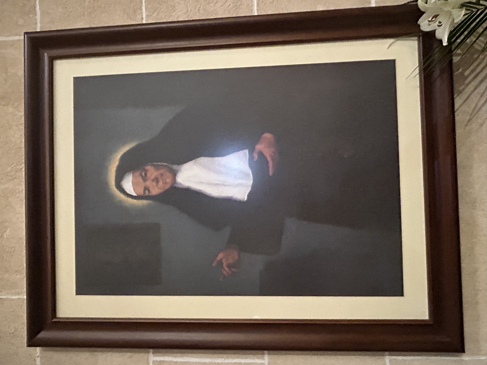

La beata Francinaina Cirer i Carbonell (1781-1855) va ser una religiosa sencellera. Filla d'una família pagesa, des de jove sentí una forta vocació religiosa, però son pare no li donà permís per ingressar en un convent. A la mort de son pare l'any 1821, reuní a casa seva una petita comunitat de dones dedicades a la pregària i a l'assistència dels pobres i malalts. L'any 1851, juntament amb les seves companyes, professà els vots de les Germanes de la Caritat, rebé l'hàbit religiós i fundà a ca seva una Casa de la Caritat dedicada a l'assistència dels malalts, a l'educació de les nines i a l'ensenyament de la doctrina cristiana. Sor Francinaina Cirer és venerada a tot Mallorca pels nombrosos miracles que s'atribueixen a la seva intercessió.
En aquest quadre, inspirat en el retrat que s'exposa a la seva casa natal de Sencelles, apareix anciana i vestida amb l'hàbit amb què tradicionalment se la representa: vestit i toca negres i pitet blanc.